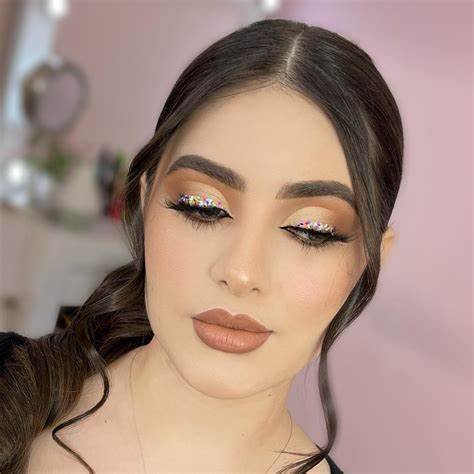

Estilos y consejos

El maquillaje es una herramienta para resaltartu belleza y expresar tu
personalidad.
Desde un look natural para el día a día, hasta un maquillaje glamuroso
para eventos especiales.
❤️Tip: Siempre limpia tu rostro antes de aplicar productos. Nunca uses maquillaje vencido —
esto podría causar irritaciones. Renueva tu kit regularmente.
❤️Muchas mujeres afirman que el maquillaje les da más seguridad en sí mismas
.
El maquillaje no es una máscara que cubre, es un arte que revela lo mejor de ti.
❤️Usa siempre FPS en tus productos de base y corrector.
❤️Un buen maquillaje comienza con una piel cuidada.
En palabras de Lisa Eldridge, una maquilladora profesional reconocida mundialmente:
Tu rostro es un lienzo que merece amor, no correcciones.
❤️Si quieres practicar técnicas nuevas, busca tutoriales con duración de 10min o menos para comenzar poco a poco. Puedes escribirnos a:
Belleza TotalCalle 123, Ciudad Belleza
Correo: contacto@bellezatotal.com
Belleza es confianza